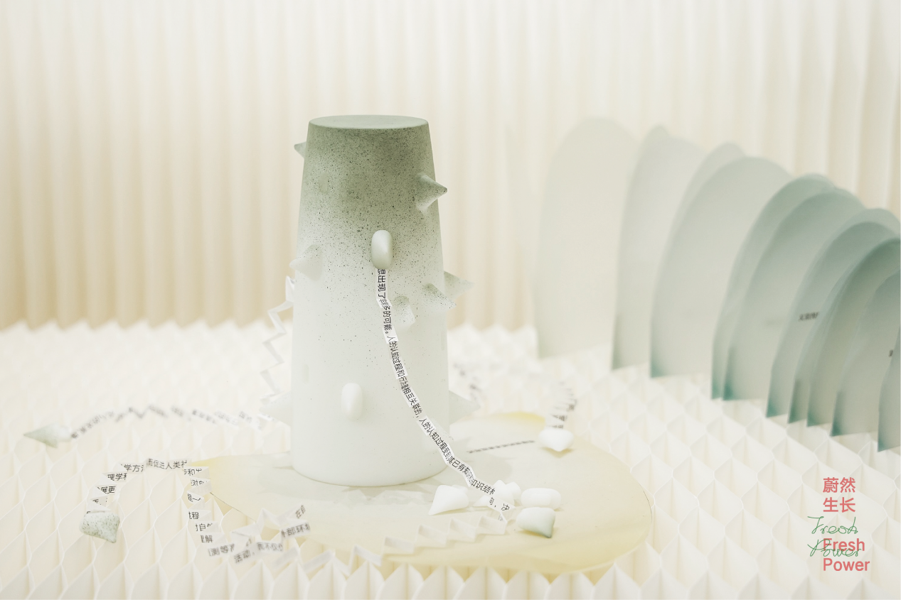
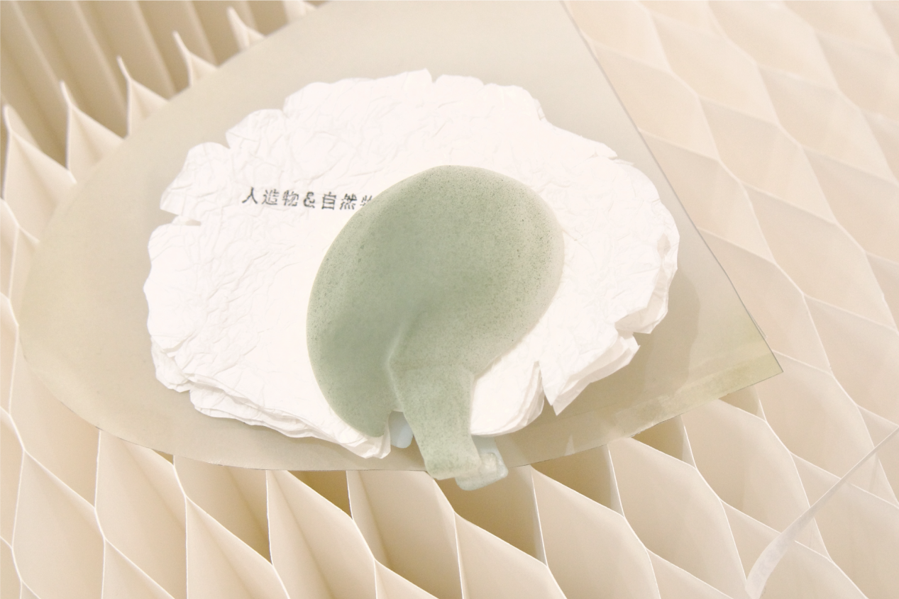
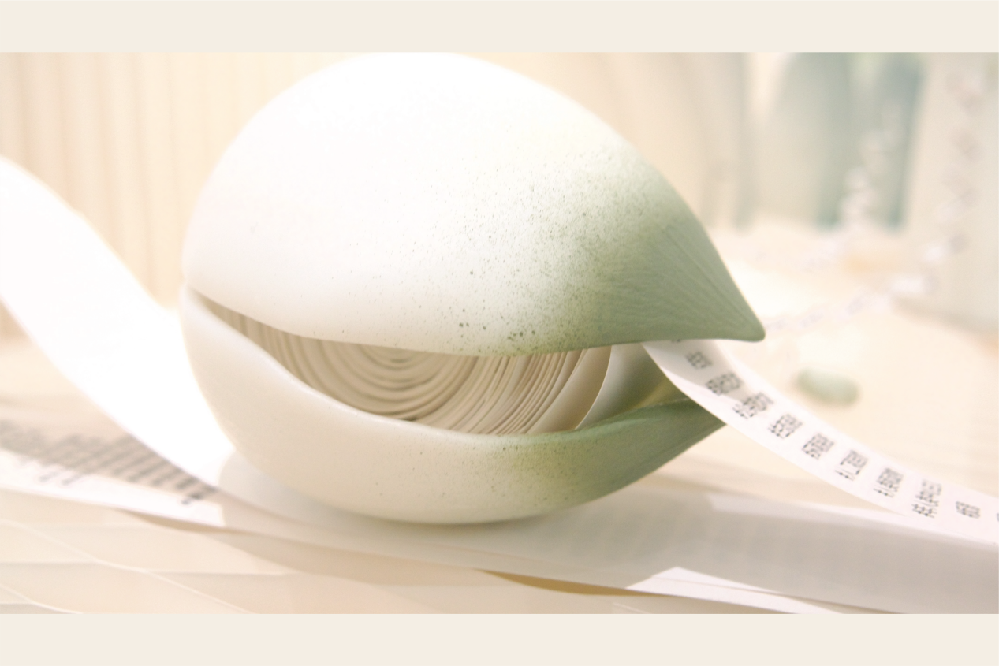
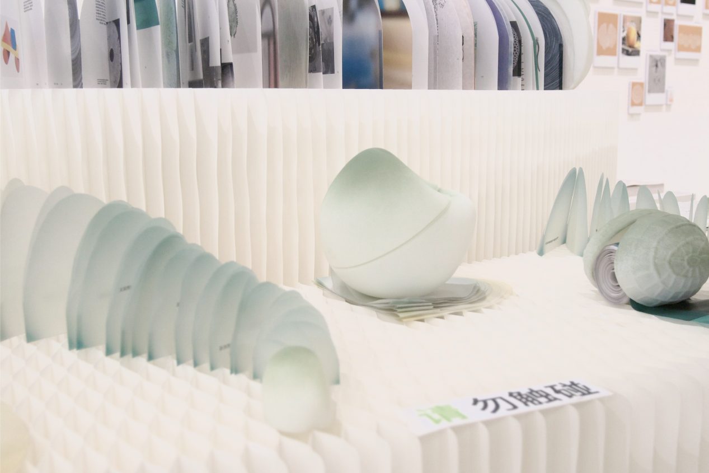
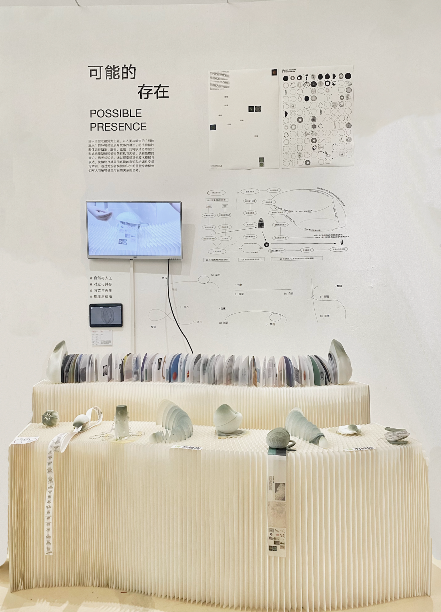

Experimental book design · Undergraduate graduation project
The Seed Book
Combining plant forms with book design.
Taking “the illusion of illusion” as its theme, this project tells a story through environmental experiments exploring “altruism” in humans and plants. It abstracts, deconstructs, and recombines the intricate forms of plants, bringing two-dimensional books into dialogue with three-dimensional natural structures to reconsider the organic and inorganic aspects of plants.
Ideas of plant consciousness, thought, and perception are explored through visual and other forms of simulation and expression. The work seeks to make imagined awareness and coordination between plants and their surroundings perceptible. By reshaping viewers’ visual and cognitive experiences, it invites reflection on relationships among people, plants, and nature.
Two-dimensional book forms are coupled and recombined with three-dimensional natural forms. Interactions between natural objects and books become a way to explore the objective and subjective connections between people and plants.
If the proper purpose of plant growth is understood in a sufficiently strange way, its associated objectivity may be equally strange.





